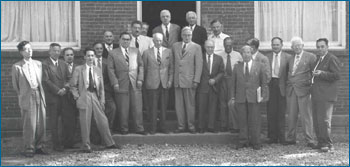
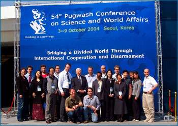
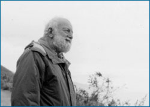
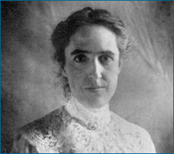
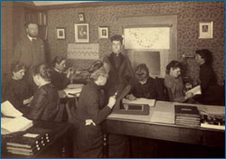

We are all influenced by the cultures in which we grew up and the societies in which we live. Those cultures shape our expectations, values, beliefs, and goals. Scientists, too, are shaped by their cultures and societies, which in turn, influence their work. For example, a scientist may refuse to participate in certain sorts of research because it conflicts with his or her beliefs or values, as in the case of Joseph Rotblat, a Polish-born physicist, whose personal convictions profoundly influenced the research he undertook.


Top: Rotblat (back row, furthest to the right) attended and helped organize the first Pugwash Conference in 1957. It was a meeting of scholars and prominent figures with the goal of reducing the danger of armed conflict and seeking cooperative solutions for global problems. Bottom: Rotblat remained committed to the ideals of the Pugwash Conference and can be seen here (standing center) at the 54th conference in 2004.
In 1939, Joseph Rotblat became one of the first scientists to grasp the implications of splitting atoms — that the energy they release could be used to start a chain reaction, culminating in a massive release of energy — in other words, an atomic bomb. However, instead of being excited by the possibility, Rotblat worried about the enormous cost to human life such weapons would have and avoided following up on the idea. Then, in the same year, Rotblat narrowly made it out of Poland before the Nazi invasion and eventually lost his wife to the German occupation there. He was now fearful that Germany would develop their own atomic bomb.
Reasoning that a competing power with a similar weapon could deter Hitler from using such a bomb, Rotblat began working on the idea in earnest and came to the United States to help the Manhattan Project develop an atomic bomb. But then came another turning point. In 1944, Rotblat learned that German scientists had abandoned their research into atomic weapons. It no longer seemed likely that the bomb which Rotblat was helping to develop would be used merely for deterrent purposes. In 1944, Rotblat became the only scientist to resign from the Manhattan Project — because he found its probable application unethical. After World War II, Rotblat channeled his physics towards medical applications and in 1995 won the Nobel Peace Prize for his efforts towards nuclear nonproliferation.

Rotblat avoided a particular research area because of his ethical views; other scientists have chosen research topics based on their values or political commitments. For example, Harvard scientist Richard Levins was an ardent supporter of socialism. After a stint as a farmer and labor organizer in Puerto Rico, Levins returned to the U.S. to study zoology, but not to focus on a small-scale concern, like the behavior of an individual organism or species. Instead, Levins invested himself in population biology and community-level interactions — areas with implications for issues he cares about: economic development, agriculture, and public health. Levins' political views don't change the outcomes of his scientific studies, but they do profoundly influence what topics he chooses to study in the first place.
And of course, the societal biases that individual scientists may have influence the course of science in many ways — as demonstrated by the example below …
FINDING INSPIRATION IN THE DETAILS

Henrietta Leavitt

Women at work at the Harvard College Observatory in 1891. Edward Pickering is standing in the corner to the left.
In the early 1900s, American society did not expect women to have careers, let alone run scientific studies. Hence, women who chose to pursue science were frequently relegated to more tedious and rote tasks. Such was the case when Henrietta Leavitt went to work at Harvard College Observatory for Edward Pickering. She was assigned the task of painstakingly cataloguing and comparing photos of thousands of stars — mere specks of light. (In fact, at the time, women were preferred for such tasks because of their supposedly patient temperaments.) However, even within this drudgery, Leavitt found inspiration — and a startling pattern in her stars. For stars whose brightness varies — called variable stars — the length of time between their brightest and dimmest points is related to their overall brightness: slower cycling stars are more luminous. Her discovery had far-reaching implications and would soon allow astronomers to measure the size of our galaxy and to show that the universe is expanding. But Pickering did not allow Leavitt to follow up on this discovery. Instead, she was sent back to her measurements, as was deemed appropriate for a woman at that time, and the study of variable stars was left for other scientists to pick up. Had society's views of women been more open-minded, this chapter in astronomy's history might have played out quite differently!